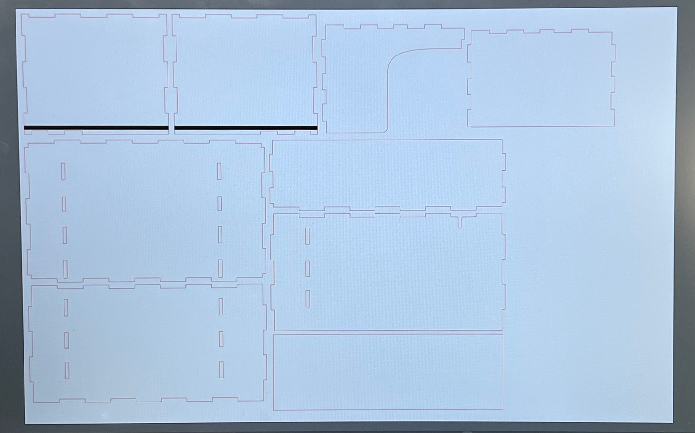

デジタルファブリケーション 第４回
Design for Others
≪ 私たちの班がPick upした記憶に残った人物の特徴と当時の状況 ≫
時間：平日の深夜
場所：公園の隅
人物：スーツを着た40～50代の男性
行動：飲酒しながらビデオ通話（おそらく友人との電話）
感情：ずっと大声で笑っていて楽しそう
≪ 共感マップ ≫
声の大きさや会話の内容、そもそも友人と電話することを気にせずに楽しめる場所がない？
寂しい？
楽しみがこれしかない？
癒しが欲しい？
≪ HMW ≫
どうすれば居場所をつくれる？
どうすれば楽しみを見出してもらえる？
どうすれば寂しさをなくすことができる？
どうすれば子供の頃に戻れるか？
⇨居場所(自分を解放できる空間、秘密基地のような空間)、癒しや楽しみが必要！！
⇨私はその中でも居場所を選択
居場所 1人で騒いでいても他人に迷惑をかけない個室を作りたい。
駅などに設置されてあるワークスペースが私が考えている案にぴったり
創作工程
